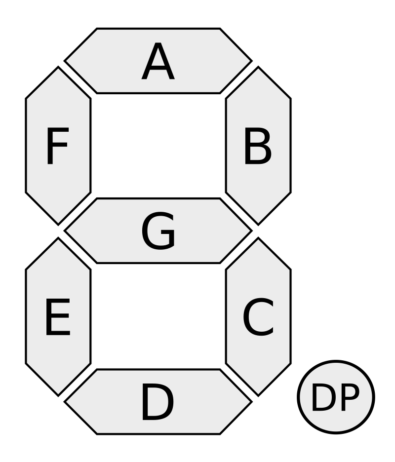
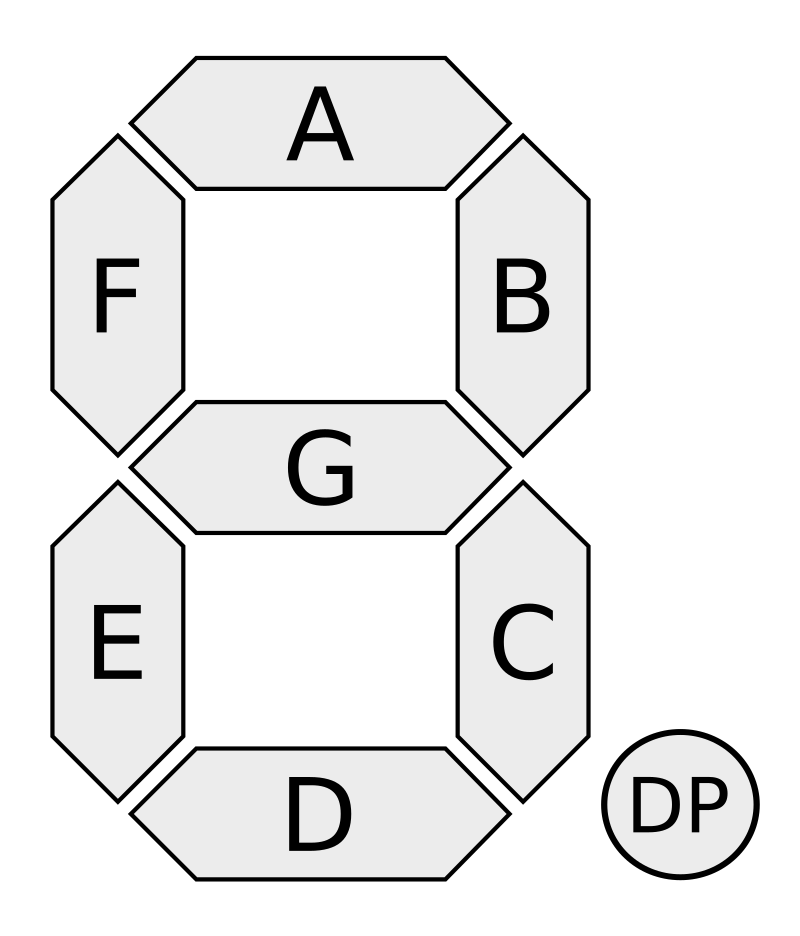

6. Display de 7 segmentos¶
Objetivos¶
- Escribir un número en el display de 7 segmentos.
- Escribir caracteres alfanuméricos en el display de 7 segmentos.
Display de 7 segmentos¶
El visualizador o display de siete segmentos es un elemento que permite mostrar números y también símbolos y caracteres de forma limitada. Este tipo de visualizador se utiliza en las ocasiones donde se desea una buena visibilidad y tiene la ventaja de ser robusto y fácil de manejar. Los visualizadores de 7 segmentos se pueden encontrar en reproductores de audio, hornos microondas, automóviles, relojes, etc.
En este tipo de visualizador solo hay que definir el estado de siete elementos para formar el número deseado. En otro tipo de displays más complejos es necesario definir el estado de 35 o más puntos para formar un número o carácter. La desventaja del display de 7 segmentos está basada en su poca capacidad para representar letras y símbolos.
En la figura adjunta puede verse un display de 7 segmentos y la nomenclatura de sus elementos.
 

{kind=link}
La función dispWrite¶
-
dispWrite()¶ Esta función permite escribir números y caracteres en el visualizador de siete segmentos y 4 cifras. Dependiendo del número de argumentos y de su tipo, se comportará de una forma distinta.
-
dispWrite(int number)¶ Cuando el argumento de la función
dispWritees un número natural (0, 1, 2, ...) este número se visualizará con cuatro dígitos en el display. Si el número tiene menos de cuatro dígitos, el display apaga por la izquierda los dígitos no utilizados. Si el número es mayor de 9999, solo se representan los cuatro últimos dígitos.Estos son algunos ejemplos de visualización.
dispWrite(0); -> [ 0 ] dispWrite(1); -> [ 1 ] dispWrite(20); -> [ 2 0 ] dispWrite(124); -> [ 1 2 4 ] dispWrite(2345); -> [ 2 3 4 5 ] dispWrite(10321); -> [ 0 3 2 1 ]
El ejemplo que aparece a continuación representa en el display un número que aumenta y disminuye con los pulsadores 3 y 4.
1 2 3 4 5 6 7 8 9 10 11 12 13 14 15 16 17 18 19 20 21 22 23 24 25 26 27 28 29 | // Aumenta y disminuye un número en el display
// con los pulsadores 3 y 4
#include <Picuino.h>
unsigned int number;
void setup() {
pio.begin(); // Inicializa el shield Picuino UNO
number = 100; // Valor visualizado al comienzo
}
void loop() {
// Muestra el número en el display de 7 segmentos
pio.dispWrite(number);
// Espera 10 milisegundos
delay(10);
// Si ha aumentado el contador del pulsador 3
if (pio.keyCount(3) > 0)
// Aumenta el número del display
number = number * 1.05 + 1;
// Si ha aumentado el contador del pulsador 4
if (pio.keyCount(4) > 0)
// Disminuye el número del display
number = number * 0.95;
}
|
dispWrite(int position, int segments)
Cuando los argumentos de la función
dispWriteson dos números, el primero representa la posición del dígito que se desea cambiar y el segundo representa los segmentos que se desea encender. Las posiciones de los dígitos son, de izquierda a derecha, 1 2 3 4.Los segmentos de un dígito se encienden o se apagan con un número binario que representa a cada uno de ellos. El primer dígito binario (más a la izquierda) representa al segmento 'a'. El segundo dígito binario representa al segmento 'b' y así hasta el octavo dígito binario que no representa a ningún segmento.
Por ejemplo, el número binario 0b10000000 encenderá el segmento 'a' y se verá en el display de 7 segmentos como una barra superior '¯'. El número binario 0b01100000 encenderá los segmentos 'b' y 'c' y se verá en el display de 7 segmentos como el número 1. El número binario 0b00000010 encenderá el segmento 'g' y se verá en el display de 7 segmentos como el signo menos '-'.
En ocasiones será más sencillo utilizar los valores ya predefinidos en la librería. A continuación se muestra una lista con los valores predefinidos de forma estándar.
- Números: SS_0, SS_1, SS_2, SS_3, SS_4, SS_5, SS_6, SS_7, SS_8, SS_9
- Letras: SS_A, SS_b, SS_B, SS_C, SS_d, SS_E, SS_F, SS_G, SS_g, SS_H, SS_h, SS_I, SS_i, SS_J, SS_K, SS_L, SS_n, SS_ny, SS_o, SS_O, SS_P, SS_q, SS_r, SS_S, SS_t, SS_u, SS_U, SS_y, SS_Y, SS_Z
- Espacio blanco: SS_SP
También se pueden crear símbolos a medida.
El siguiente programa hace rotar una barra a través de los cuatro segmentos superiores de un dígito.
1 2 3 4 5 6 7 8 9 10 11 12 13 14 15 16 17 18 19 20 21 22 23 24 25 | // Gira un segmento alrededor de los cuatro ledes superiores de un dígito
#include <Picuino.h>
void setup() {
pio.begin(); // Inicializa el shield Picuino UNO
}
void loop() {
// Enciende el segmento 'a' y espera 0,1 segundos
pio.dispWrite(1, 0b10000000);
delay(100);
// Enciende el segmento 'b' y espera 0,1 segundos
pio.dispWrite(1, 0b01000000);
delay(100);
// Enciende el segmento 'g' y espera 0,1 segundos
pio.dispWrite(1, 0b00000010);
delay(100);
// Enciende el segmento 'f' y espera 0,1 segundos
pio.dispWrite(1, 0b00000100);
delay(100);
}
|
El siguiente programa hace rotar una barra a través de todos los segmentos exteriores de un dígito.
1 2 3 4 5 6 7 8 9 10 11 12 13 14 15 16 17 18 19 20 21 22 23 24 25 26 | // Gira un segmento alrededor del primer
// dígito del display de 7 segmentos
#include <Picuino.h>
int segment;
void setup() {
pio.begin(); // Inicializa el shield Picuino UNO
segment = 0b10000000; // El primer segmento encendido es el 'a'
}
void loop() {
// Enciende el segmento seleccionado y espera 0,1 segundos
pio.dispWrite(1, segment);
delay(100);
// Desplaza el segmento hacia la derecha
segment = (segment >> 1);
// Si se ha llegado al segmento 'f'
if (segment == 0b00000010)
// Enciende el segmento 'a'
segment = 0b10000000:
}
|
dispWrite(int digit, int digit, int digit, int digit)
Cuando la funcióndispWritetiene cuatro argumentos, cada uno es interpretado como el valor de cada dígito del visualizador de siete segmentos. Esta forma es más cómoda para visualizar una palabra. El siguiente ejemplo hace aparecer en el display la palabra 'HOLA'.
1 2 3 4 5 6 7 8 9 10 11 12 13 14 15 16 | // Muestra la palabra 'HOLA' en el display
#include <Picuino.h>
void setup() {
// Inicializa el shield Picuino UNO
pio.begin();
// Muestra la palabra 'HOLA'
pio.dispWrite(SS_H, SS_O, SS_L, SS_A);
}
void loop() {
}
|
Ejercicios¶
Programa el código necesario para resolver los siguientes problemas.
Completar el siguiente programa para que cuente hacia atrás desde 10 hasta 0 cambiando de valor una vez cada segundo. Una vez terminada la cuenta atrás, debe encenderse el led rojo.
1 2 3 4 5 6 7 8 9 10 11 12 13 14 15 16 17 18 19 20
// Cuenta atrás de 10 segundos #include <Picuino.h> int count; void setup() { pio.begin(); // Inicializa el shield Picuino UNO count = 10; while(count > 0) { // Muestra el número en el display // Espera un segundo // Reduce la variable count en una unidad } // Muestra el número en el display // Enciende el led rojo } void loop() { }
Completar el siguiente programa para que funcione como un dado electrónico. Al presionar el pulsador 1, se debe mostrar en el display un número desde el 1 hasta el 6.
1 2 3 4 5 6 7 8 9 10 11 12 13 14 15 16 17
// Dado electrónico #include <Picuino.h> int value; void setup() { pio.begin(); // Inicializa el shield Picuino UNO } void loop() { // Calcula un número aleatorio entre 1 y 6 value = random(1, 1 + 6); // Muestra el valor por el display // Espera 50 milisegundos // Espera mientras no se pulse la tecla 1 }
Mostrar en el cuarto dígito una animación que consiste en iluminar todos los segmentos uno a uno desde el segmento 'a' hasta el segmento 'f'. Cuando todos los segmentos estén iluminados, se deben apagar todos otra vez y la secuencia comenzará de nuevo. El tiempo de espera entre el encendido de un segmento y el siguiente será de medio segundo.
Diseña dos símbolos nuevos y realiza un programa que los muestre en el display en las posiciones 2 y 4.
Dibuja en el display unas pesas.
Muestra en el display las palabras 'HOLA' y un nombre propio corto. Las dos palabras deben alternarse cada medio segundo.
Realiza una animación original en el display, mostrando símbolos o movimientos de luz.